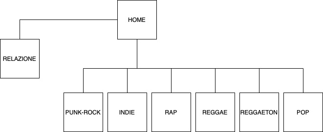
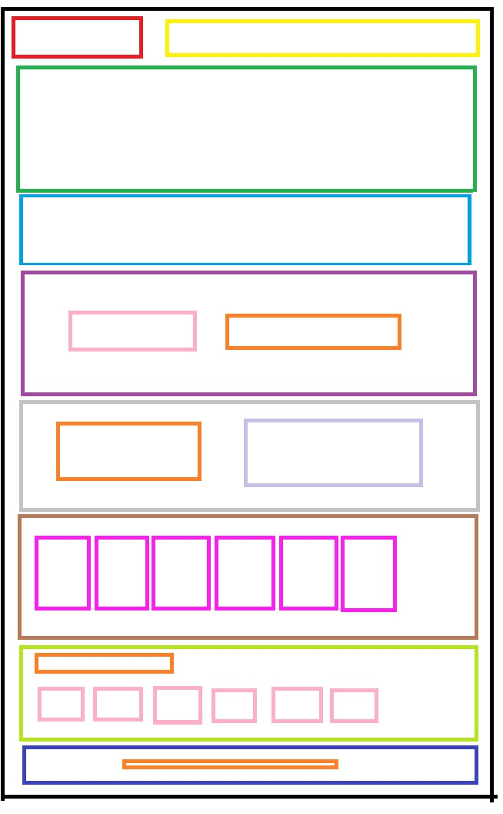
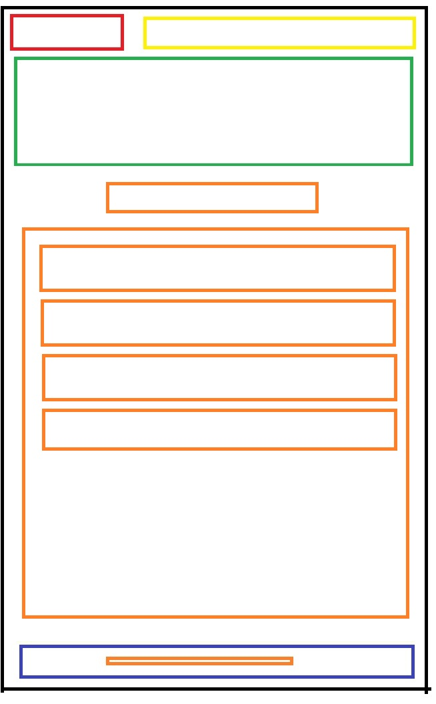
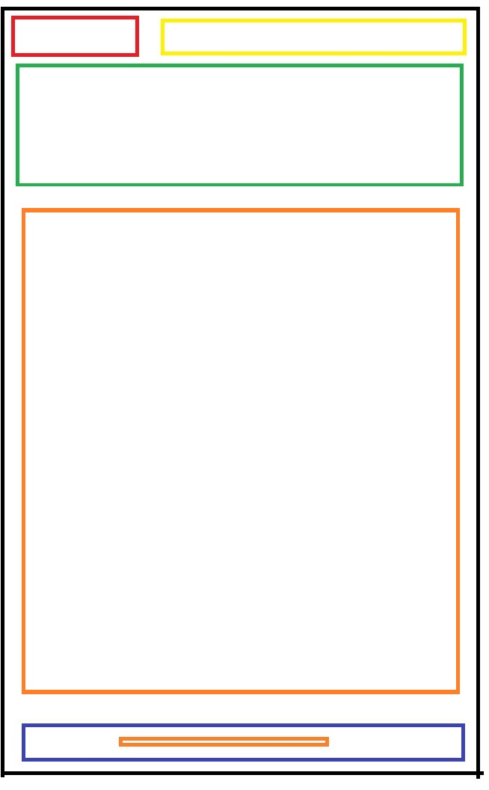
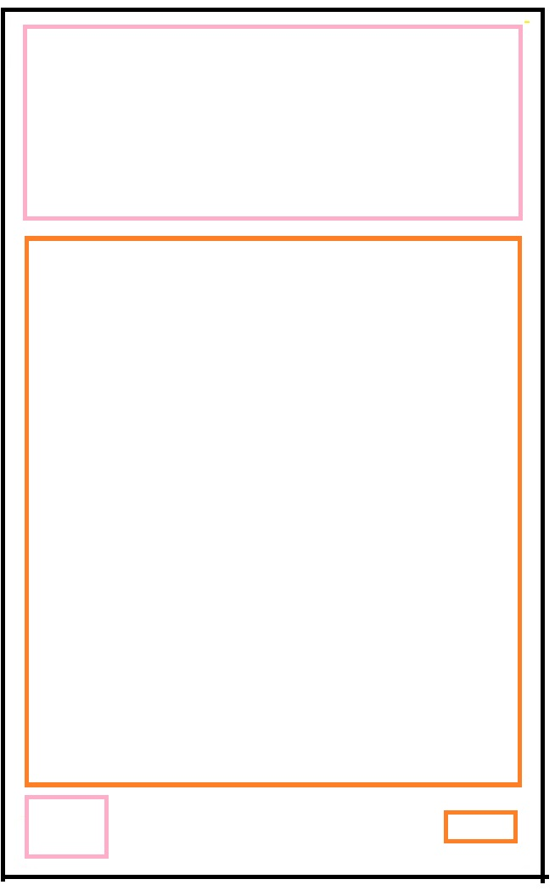

Abbiamo creato questo sito per la raccolta delle migliori citazioni musicali. Gli utenti possono collegarsi facilmente al nostro account instagram dove potranno ripubblicare le loro citazioni preferite. Ci siamo focalizzati soprattutto sui giovani poichè sono quelli che hanno maggiore possibilità di condividere i nostri post instagram (nonostante il sito web abbracci tutte le generazioni dato che la musica è universale). Oltre all'interazione continua con la community, alla possibilità di ripubblicare sui propri social le citazioni , Insta Music ha come valore aggiunto una precisa divisione delle citazioni in generi musicali che rende la ricerca più intuitiva.
1 - OBIETTIVI
L'obiettivo di INSTA-MUSIC è quello di dare alla possibilità agli utenti di reperire le migliori citazioni musicali presenti nel panorama nazionale e internazionale per poi ripubblicarle rapidamente sui propri social.
2 - TARGET UTENTE
Il sito è rivolto ad ascoltatori di ogni età. I visitatori principali pensiamo possano essere soprattutto i giovani (under 35 magari) perchè più abili nell'utilizzo dei social. Questi ultimi sono più abituati a ripubblicare contenuti sui social e, in questi modo, possono anche farci anche un'importante pubblicità.
3 - COMPETITORS
Tra i principali competitor risulta esserci "frasicelebri.it" che però propone anche citazioni cinematografiche e frasi che esulano il tema musicale. Il sito è strutturato in maniera molto semplice e con una cura estetica poco accentuata. Un servizio simile viene proposto anche da "sorrisi.com" che però ha un target diverso e fa principalmente giornalismo incentrato sullo spettacolo in generale. Quest'ultimo ha un bacino d'utenza molto ampio anche se il servizio di citazioni musicali non risulta essere il loro cavallo di battaglia.
1 - ARCHITETTURA DEL SITO
2 - WIREFRAME
Legenda dei colori:
- NERO = body
- ROSSO = Titolo+Logo
- GIALLO = Nav
- GIALLO+ROSSO = Header
- VERDE = Section "Main-Banner"
- AZZURRO = Section "Features"
- ROSA = Foto
- ARANCIONE = Testo
- VIOLA = Section "Why-Us"
- GRIGIO = Section "Coming-Soon"
- LILLA = Form Inserimento Citazioni
- MARRONE = Section Generi ("Courses")
- LIME = Section "Contact"
- BLU = Footer
- FUCSIA = Div Genere
Wireframe HomePage

Wireframe Pagina Genere

Wireframe Pagina Relazione

Wireframe Sezione Genere

3 - LOOK AND FEEL
Il logo è stato realizzato utilizzando "Adobe Express" e riprende il tema musicale e il collegamento diretto che lega il nostro sito a quello che è il social più utilizzato al giorno d'oggi. La grafica dei post Instagram è stata curata utilizzando "Canva". Il font utilizzato è Montserrat, mentre i colori principali sono il giallo scuro (codice:#f5a425) e il blu scuro (codice:#121b2f) che creano un bel contrasto cromatico. Le scritte sono tutte bianche poichè lo sfondo è scuro. Nella home c'è un video in loop che dà dinamicità a tutta la pagina. La Home Page è strutturata in maniera alquanto originale, cioè piuttosto che fare una pagina per ogni sezione (About Us, Generi Musicali....) abbiamo voluto dividere la stessa pagina iniziale in diverse section attraverso uno sviluppo verticale.
Il sito è realizzato utilizzando HTML, CSS e JavaScript (con utilizzo di Bootstrap).
Gli strumenti tecnologici a supporto della progettazione sono stati i seguenti:
- "Canva" per la grafica dei post Instagram
- "Diagrams.net" per la creazione dei diagrammi del Project Management Plan
- "GitHub" per la pubblicazione del sito
- "VisualStudio" come text editor
- "Adobe Express" per la creazione del logo di InstaMusic e del Wireframe
- "Microsoft Clipchamp" per la creazione di file mp4 da inserire in background
- "Templatemo.com" per la scelta del template html+css più adeguato alle nostre esigenze
Analizzando i siti dei competitors notiamo come nella maggior parte dei casi le pagine risultano caotiche e poco intuitive. Noi abbiamo cercato di puntare sulla chiarezza e sulla facilità di condivisione delle citazioni sui social. Il raggruppamento per genere è una feature che non abbiamo trovato su nessun sito simile al nostro e risulta essere un punto di forza in quanto ogni ascoltatore può anche scoprire nuove canzoni del suo genere preferito. I competitors sopracitati non propongono infine un sistema che dia agli utenti il modo di consigliare le frasi agli sviluppatori. Questo ci permette di ascoltare sempre l'opinione dei nostri ascoltatori.
L'obiettivo principale è quello di dare la possibilità agli utenti di cercare le loro frasi musicali preferite e poterle condividere con i loro amici su Instagram. In questo modo ci sarebbe una maggiore condivisione di contenuti musicali che possono sostituire l'enorme quantità di post "spazzatura" che popolano i social.
Il sito è rivolto a tutti gli ascoltatori che abbiano voglia di condividere i propri gusti con i followers o che semplicemente vogliono ricercare le migliori citazioni del proprio artista preferito. Il target principale risulta essere tutta la fascia che arriva fino ai 35 anni più o meno. Come target secondario ci sono quelle persone che non hanno i social o che non hanno come obiettivo primario quello di ricondividere le frasi su Instagram. Il messaggio che vuole trasmettere il sito è quello di ridare importanza all'arte sui social. Questo meccanismo può funzionare come un passaparola mediante il quale gli utenti possono conoscere canzoni che prima ignoravano semplicemente attraverso le insta-stories dei propri "seguiti".
Come già discusso il sito è strettamente collegato al profilo Instagram, il quale risulta essere il principale mezzo di comunicazione utilizzato. Nello specifico attraverso insta-stories e la bio si può reperire il link per il sito e raggiungerlo facilmente.
Il sito realizzato ha, nel suo piccolo, raggiunto l'obiettivo che ci eravamo prefissati, cioè ottenere più di 20 like ai post e più di 20 follow nel giro di un'unica giornata (dati che si spera possano crescere con il tempo).
In attesa di aggiornamento...